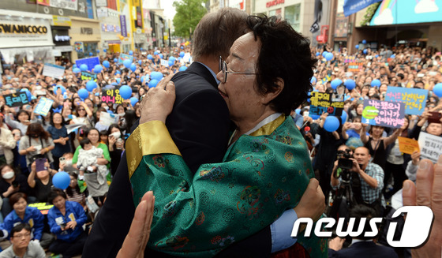

文 재협상 공약 밝혔지만 日 응할 가능성 적어
한일관계 악화도 우려…전략적 접근 필요할 듯
문재인 더불어민주당 대통령 후보가 10일 제19대 대통령으로 취임하면서 박근혜 정부 하에서 도출된 한일간 위안부 합의에 변화가 불가피할 것으로 보인다. 박근혜 정부의 최대 외교 실책으로 꼽히는 위안부 합의는 도출됐을 때부터 과정과 내용면에 있어 논란을 몰고 다녔다. 박근혜 정부는 출범 초 과거사 문제를 해결을 하지 않고선 한일관계 개선을 하지 않겠다는 자충수를 뒀고, 이로 인해 양국간 갈등 국면은 길어졌다. 그러다 한미일 3국동맹 강화 분위기 등으로 한일관계 개선의 필요성이 제기되자 지난 2015년 12월28일 한일 위안부 합의를 전격 발표하게 된다. 내용 면에서 합의는 핵심 쟁점이었던 일본의 법적 책임 문제 등을 모호하게 다뤘다는 지적을 받는다. 또 위안부 문제를 '최종적·불가역적'으로 해결된 것이라고 명시해 논란을 더욱 키웠다. 무엇보다도 우리 정부는 합의에서 일본 대사관 인근에 설치된 위안부 소녀상이 사실상 철거되도록 노력하겠다는 약속을 해 두고두고 비판을 받고 있다. 이에 문 대통령은 후보 시절부터 일본의 법적 책임과 공식 사과가 담기지 않은 합의는 무효라며 반드시 재협상을 할 것이란 공약을 내놓았다. 문 대통령은 지난 1월 부산 소녀상을 찾은 자리에서 "위안부 합의에는 일본이 법적인 책임을 인정하고 공식 사죄하는 내용이 빠져있다"며 "이 문제를 제대로 해결해야 한다. 소녀상이 외롭지 않게 하겠다"고 말한 바 있다. 그러나 일본 정부는 한국의 정권이 바뀌더라도 위안부 합의는 지켜져야 한다는 입장이어서 문 대통령의 바람대로 재협상이 순조롭게 이뤄질 가능성은 낮다.합의의 양 당사자 중 한쪽이 합의에 불만족스러울 때, 일방적인 '합의 폐기'는 가능하지만 상대방을 협상장에 이끌어야 하는 '재협상'은 불가능에 가까운 것이기 때문이다.
현재 일본 정부는 위안부 합의의 재협상은 물론 우리 정부의 일방적인 합의 폐기도 수용하지 않을 분위기다. 국가간 합의를 파기했다고 국제사회에서 비난전을 펼칠 수도 있다. 스가 요시히데 일본 관방장관은 문 대통령의 취임 첫날 열린 정례브리핑에서 아베 신조(安倍晋三) 총리가 문 대통령에 직접 한일 위안부 합의의 착실한 이행을 요구할 것이라며 "미국을 비롯한 국제사회도 (합의를) 높이 평가하고 있다"고 강조했다. 위안부 합의가 한일관계 전반을 모두 뒤흔들 만한 위력을 가진 이슈라는 점에서 합의 파기 뒤 찾아올 '한일관계 악화'라는 후폭풍도 만만치 않을 전망이다. 문 대통령은 과거사 문제와 여타 문제들을 분리하는 '투트랙' 전략으로 대일 정책을 접근하겠다는 입장인 것으로 알려졌지만, 합의 파기로 양국 관계가 악화된 상황에서 이 전략이 효과가 있을진 미지수다. 그 어느 때보다 대일 전략적 접근이 필요한 이유다. 이가운데 외교부는 대선 전부터 차기 정부의 위안부 합의 파기 가능성을 염두에 두고 내부적으로 나름의 대비를 해온 것으로 알려졌다. 다만 마땅한 대응 방안이 없는 것도 사실이여서 먼저 그간의 합의 과정과 이행 상황 등을 충실히 차기 정부에 보고하겠단 방침인 것으로 전해졌다.